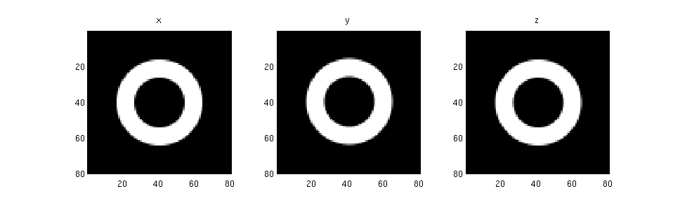
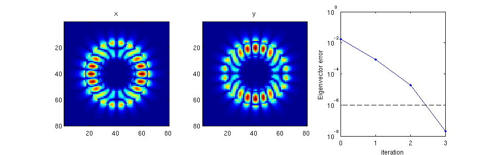
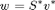

Contents
solve_2D_mode_example
Shows how an eigenmode of a 2D structure can quickly be found in Matlab.
% Make this a function instead of a script to allow for nested function definitions. function [] = solve_2D_mode_example()
Create the simulation
We use the add_planar and stretched_coordinates functions to create our structure as well as our simulation grid.
dims = [80 80 1]; % Size of the simulation. omega = 0.18; % Frequency of the simulation. % Create a ring epsilon structure. my_shapes = {struct('type', 'rectangle', ... 'position', [0 0], ... 'size', [1e9 1e9], ... 'permittivity', 1), ... struct('type', 'circle', ... 'position', [0 0], ... 'radius', [24], ... 'permittivity', 12.25), ... struct('type', 'circle', ... 'position', [0 0], ... 'radius', [14], ... 'permittivity', 1)}; epsilon = {ones(dims), ones(dims), ones(dims)}; epsilon = add_planar(epsilon, 1e9, 1, my_shapes); % Plot the structure. xyz = 'xyz'; for k = 1 : 3 subplot(1, 3, k); imagesc(epsilon{k}'); axis equal tight; title(xyz(k)); colormap gray end snapnow; % Create the s-parameters. [s_prim, s_dual] = stretched_coordinates(omega, dims, [10 10 0]); % Create the current source this is only used to get v_guess for the mode solver. J = {zeros(dims), zeros(dims), zeros(dims)}; J{1}(22, 40, 1) = 1; % Point source inside ring. % Permeability. mu = {ones(dims), ones(dims), ones(dims)};
Form matrices and function handles
We now form the necessary linear algebra components and function hanles to solve the system using eigenmode_solver.
We actually used a modified electromagnetic wave equation where ,
% Get ingredient matrices and vectors. [A1, A2, m, e, b] = maxwell_matrices(omega, s_prim, s_dual, mu, epsilon, J); % Form full matrix. n = prod(dims); my_diag = @(z) spdiags(z(:), 0, numel(z), numel(z)); A = my_diag(e.^-0.5) * A1 * my_diag(m.^-1) * A2 * my_diag(e.^-0.5); % Compose function handles. mult_A = @(x) A * x; solve_A_shifted = @(lambda, b) (A - lambda * speye(3*n)) \ b; % In-line function for visualization of progress. function my_vis(lambda, v) colormap jet for k = 1 : 3 E{k} = reshape(v((k-1)*n+1 : k*n), dims); subplot(1, 3, k) imagesc(abs(E{k})'); axis equal tight; % abs looks better than real :). title(xyz(k)); end end % Solve to get v_guess. v_guess = solve_A_shifted(omega^2, b); my_vis(omega^2, v_guess) snapnow;
The figure above shows our initial v_guess, which we have obtained via simulation.
Run the eigenmode solver function
% Find the eigenmode
[lambda, v] = eigenmode_solver(mult_A, solve_A_shifted, @my_vis, v_guess, 10, 1e-6);
snapnow;
 Here we obtain one of the eigenmodes of the ring resonator.
Obtaining the right eigenvector
This is made possible through the symmetrization matrix S, via

% Form symmetrization matrix S. [spx, spy, spz] = ndgrid(s_prim{1}, s_prim{2}, s_prim{3}); [sdx, sdy, sdz] = ndgrid(s_dual{1}, s_dual{2}, s_dual{3}); S = my_diag([sdx(:).*spy(:).*spz(:); ... spx(:).*sdy(:).*spz(:); ... spx(:).*spy(:).*sdz(:)]); % Obtain right eigenvector. w = conj(S * v); fprintf('Error of right eigenvector: %e\n', norm(w' * A - lambda * w')/norm(w));
Error of right eigenvector: 2.047995e-08
end